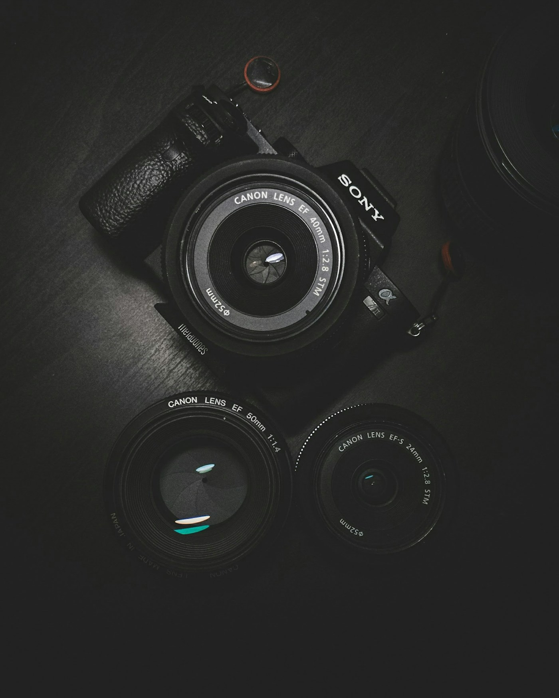

Gambar berikut merupakan ilustrasi kategori layanan. Ruang lingkup dan hasil akhir disesuaikan dengan kebutuhan serta brief setiap project.


Website & Landing Page
Website membantu bisnis, organisasi, dan personal brand menyampaikan informasi dalam satu tempat yang mudah ditemukan dan dijelajahi. Susunan konten dirancang agar pengunjung memahami siapa Anda, apa yang ditawarkan, dan langkah berikutnya yang bisa dilakukan.
Cocok untuk
Profil perusahaan, usaha yang ingin punya pusat informasi online, portfolio personal, atau campaign dengan satu halaman fokus.
Cakupan yang dapat dibahas
- Struktur halaman dan susunan informasi berdasarkan brief.
- Tampilan responsif untuk ponsel dan desktop.
- Bagian layanan, portfolio, kontak, dan ajakan bertindak sesuai kebutuhan.


CV & Portfolio
CV dan portfolio menyajikan pengalaman, kemampuan, serta karya pilihan secara ringkas dan teratur. Informasi yang relevan dibuat mudah dipindai sehingga pembaca mendapat gambaran yang jelas tentang profil dan kontribusi Anda.
Cocok untuk
Mahasiswa, fresh graduate, pencari kerja, profesional, freelancer, atau kreator yang ingin merapikan presentasi diri.
Format yang dapat dibahas
- CV profesional dengan hierarki informasi yang jelas.
- CV dengan format sederhana yang lebih mudah dipindai sistem rekrutmen; hasil pembacaan tetap bergantung pada sistem yang digunakan.
- Portfolio terpilih untuk memperlihatkan proyek dan peran Anda.

Fotografi
Fotografi mengabadikan orang, benda, atau peristiwa melalui rangkaian gambar dengan arah visual yang terencana. Kebutuhan pemotretan dibicarakan sejak awal agar lokasi, waktu, gaya, dan hal penting yang perlu diabadikan dapat ditentukan dengan jelas.
Cocok untuk
Wisuda, acara, potret pribadi, pembentukan citra diri profesional, atau kebutuhan foto produk sesuai arahan.
Yang disepakati sebelum sesi
- Tujuan pemotretan, lokasi, waktu, dan acuan gaya.
- Daftar momen atau foto prioritas untuk acara.
- Pilihan foto, penyuntingan, dan format berkas akhir mengikuti paket yang disepakati.

Videografi
Video menggabungkan gambar bergerak, suara, dan alur cerita untuk menyampaikan suasana atau pesan. Bentuk produksinya ditentukan dari tujuan, kanal publikasi, durasi, serta momen yang ingin ditonjolkan.
Cocok untuk
Dokumentasi acara, aftermovie, video highlight, reels, video promosi, atau konten organisasi dan personal brand.
Alur produksi
- Menentukan tujuan, referensi, format, dan kebutuhan pengambilan gambar.
- Pengambilan gambar mengikuti jadwal dan cakupan yang disepakati.
- Penyuntingan dan format ekspor disesuaikan dengan kanal penggunaan.

Desain Kreatif
Desain kreatif menyusun teks, warna, dan elemen visual agar pesan mudah dipahami serta sesuai dengan audiens dan media penggunaannya. Setiap materi dimulai dari tujuan komunikasi dan informasi yang perlu ditampilkan.
Cocok untuk
Bisnis, organisasi, atau individu yang membutuhkan materi visual untuk informasi, promosi, campaign, maupun presentasi.
Jenis materi
- Poster dan materi promosi digital.
- Konten atau kit media sosial.
- Pitch deck, presentasi, dan aset visual lain sesuai brief.
Proses kerja yang jelas
Rincian waktu, materi, revisi, dan format hasil dibahas berdasarkan kebutuhan serta ruang lingkup project.
- 01
Brief & kebutuhan
Tujuan, audiens, materi, jadwal, dan prioritas dikumpulkan.
- 02
Konsep & arahan
Arah isi atau visual disepakati sebelum pengerjaan utama.
- 03
Eksekusi & penyempurnaan
Pengerjaan ditinjau dan disesuaikan dengan kesepakatan project.
- 04
Final delivery
File akhir diserahkan dalam format yang sudah dibahas.